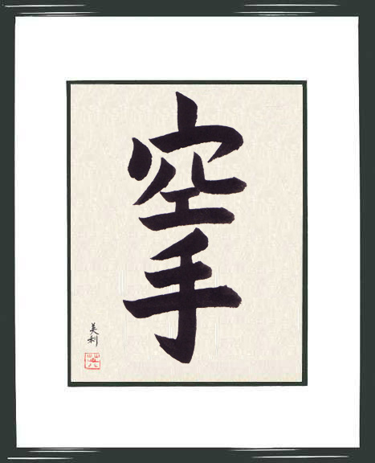

— Текі Мотобу (засновник Мотобу-рю Кемпо і відомий вуличний боєць із Окінави)
ШОТОКАН (Сьотокан)
Один з п'яти головних видів японського карате. Його створили в 30-і роки 20 ст. майстер Гітін Фунакоші (1869-1957) і його син Есітака.
НазваСуть
Ката
Емблема стилю
Тотемний знак стилю
«Атака в карате не має переваги»
«В карате не нападають першим, в карате б'ють першим»
Філософія, шлях "До"
Назва
Назва Шотокан виникла в 1939 році з ім'я залу, в якому проходили тренування під керівництвом Фунакосі - засновника сучасного карате-до. Великий учитель карате був ще і чудовим поетом: свої твори він публікував під творчим псевдонімом "сето" (шото) - "шелест вершини сосни". Згодом стиль Фунакосі і його учнів стали називати шотокан, хоча сам засновник карате був категорично проти виділення різних стилів і виступав за цілісність карате.
Суть
Суть мистецтва карате-до (шотокан) - як бойового і спортивного єдиноборства - полягає в послідовності рухів, ударів і блоків, регулюванні дихання, почуття ритму і контролі за переміщеннями, зміні між напругою і розслабленням тіла, зміцненні бойового духу. Займаючись карате, учень розвиває координацію рухів, прагнути до досягнення внутрішньої концентрації і гармонії.
Ката
В основі карате лежить система ката (яп. - форма, образ) - комплекси вправ і прийомів по техніці захисту від декількох уявних супротивників. Причому ефективність ката вкрай висока в типових ситуаціях реального бою. Для сучасного карате ключове значення мають традиційні ката: саме від уміння їх використовувати і залежить оцінка каратиста. Самі техніки (ката) єдині для всіх основних напрямків карате, проте їх поєднання, різні системи застосування і, головне, відмінності в духовно-ціннісних установках учнів і вчителів - додають кожному стилю неповторність і своєрідність.
Емблема стилю
Червоний круг-це символічне зображення сонця, оточене білим півмісяцем, - емблема стилю і означає єдність
двох протилежних начал Ян і Інь - сонця і місяця.
Тотемний знак стилю

Cтилізоване зображення тигра з піднятою передньою лапою і ієрогліфом "Кйо" (вчення) над задньою лапою.
«Атака в карате не має переваги»
Фунакоші оголосив головним принципом карате поняття, відповідно до якого "атака в карате не має переваги", або "карате не є зброєю агресії". Тим самим він підкреслив ідею гуманності, яку проповідував в карате-до. Однак, крім філософського сенсу цей девіз містить і практичний сенс, який полягає в тому, що атакуюча рука або нога супротивника перетворюються на мішень для того, хто захищається і може бути уражена могутнім блоком або контрударом. (Ось чому Ката в Шотокані завжди починаються з захисного руху - блоку).
«В карате не нападають першим, в карате б'ють першим»
Разом з тим, фраза про те, що карате не є зброєю агресії має продовження. В цілому ця ідея несе наступний сенс: в карате не нападають першим, в карате б'ють першим. Це передбачає припинення агресії на самому початку і відповідає на питання чи потрібно чекати першого удару з боку агресора? Тобто, агресія починається першою, але контратака закінчується раніше, ніж атака. У підсумку, якщо агресор явно і конкретно збирається напасти, то слід нанести удар раніше його.
Філософія, шлях "До"
- головне в атаці - вибрати правильний момент і на швидкому зближенні завдати один або декілька ударів, чим досягається максимальна ефективність при мінімумі засобів.
- головне в захисті - надійність і сила блоку, щоб у супротивника не виникало бажання атакувати знову.
- основне зброю - потужні прямі удари руками з кроком вперед, з кроком назад або на місці; різкі і сильні удари ногами в корпус, підбиви і підсічки під опорну ногу або під обидві ноги. Принцип роботи ногами наступний: на двох ногах стояти стійкіше, ніж на одній.
Оскільки концепція карате припускає вдосконалення тіла і духу і їх чітку координацію, слід завжди пам'ятати, що пріоритет віддається духовному розвитку, а фізичний розвиток знаходиться на другому місці.
Сенс "До" (Шлях) в Дзен Буддизмі полягає в тому, щоб перевести увагу всередину себе і на довгому Шляху тренувань, медитації і самопізнання стврення себе новою особистістю, подолавши власну недосконалість, в гармонійній єдності з навколишнім світом.